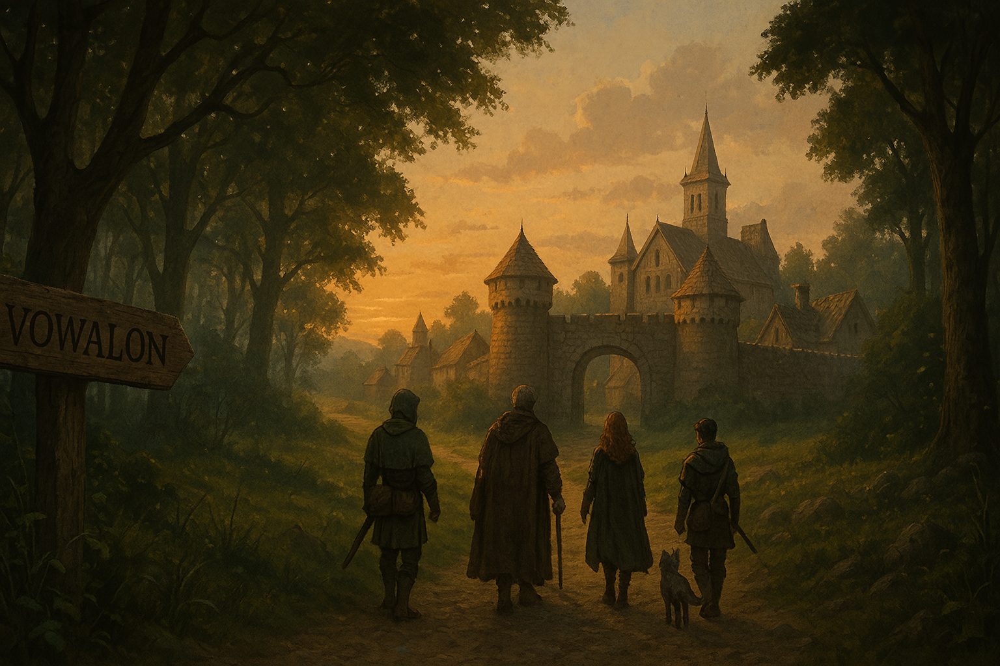

Chapter 5: Back in the Woods
Curse of Vowalon


Curse of Vowalon
15048.07.21
台北市議員帶著葛蘭倫大法師再度走入了嚎叫森林。有了法力高強的葛蘭倫，大家並不擔心遇到野狼會需要浴血奮戰，甚至，他們想看看葛蘭倫大法師在戰鬥中到底有多厲害。然而，旅途的一開始就不太順利。在走了一段時間後，大家迷了路，花了些時間才折回原處，走回正確的道路。
在經過偵查後，大家得知不遠處又有狼群，而做好了準備。葛蘭倫大法師在戰鬥中並未讓人驚艷。大家不確定到底是怎麼回事？他退休太久了？年紀太大了？還是怎麼回事？在成功擊退了狼群後，大家也選擇在原處紮營過夜。
15048.07.22
守夜過程中，薩梅爾撿到了一隻走失了的幼狼，幼狼似乎對他也十分親密。他選擇帶著幼狼繼續冒險，並將他取名為「酷爆」。
起床後，大家準備出發，繼續冒險。對於新加入的酷爆，大家也沒有額外的意見。大家在河邊裝了水後，準備過橋。木橋不好過，幾位成員落入河水中，最終只有米多莉因為他厚重的裝甲，沒能爬起，失落地順著河水繼續往下飄走。
米多莉在河水中差點淹死，但是在他所信仰的守護之神津菈的庇護下生存了下來，也爬到了岸上，虛弱地等待其他人的到來。
其餘的冒險者們終於在踏過了一座石橋後再次與米多莉相會，不過卻發生了一點小衝突。沒有被拯救這件事，似乎讓米多麗內心不滿。米多莉向Tai Tai我還要襲擊，搶奪了他的背包。沒想到Tai Tai我還要竟然不正面衝突，選擇把背包直接送給米多莉，就連自己剛買的神秘項鍊也都遞給了他。
暫時化解衝突後，眾人繼續朝沃瓦倫前進，途中遇到了一大批的狼群。戰鬥中幾名成員一度陷入昏迷，大家在與狼群戰鬥之餘進行搶救，最終將來襲的狼群全數殲滅。
距離沃瓦倫越來越接近，路邊一度出現一道黑影，大家試圖走入森林內偵查，卻苦無結果。不過後來大家也在路邊撿到了幾顆神秘的果實，在薩梅爾衝動地咬下一口後，發現口味香甜，整個人神清氣爽，大家也分別把果實吃了，並把種子留下。
午後，眾人終於踏出了嚎叫森林，沃瓦倫再次顯現於大家的眼前。
15048.07.21
The Taipei City Councilor brought the Archmage Grenland into the Howling Forest. With the powerful Grenland, the adventurers were not afraid of fight the wolves anymore. They even wanted to see how good Grenland is during a battle. However, the journey didn't start well. After some time, the group got lost. The spent quite some time to walk back to the correct path.
After some scouting, the group learned that there were another group of wolves not far away, and so they prepared. The archmage Grenland didn't surprise the group during the fight. The group had no idea why. Had he been retired for too long? Was he too old? Or what? After defeating the wolves, they decided to set up the camp right where there were.
15048.07.22
During his night shift, Samael found a lost wolf cub, and the cub seemed to be quite intimate to him. He decided to bring the cub along their adventure, and named him "Kubao".
After waking up, everyone was prepared to continue on the adventure. As for the newly joined Kubao, no one had extra opinions. The group filled their water from the stream, and prepare to walk across the bridge. It was rather danger to cross the wooded bridge. Some adventurers fell into the river, but Midori was the only one who couldn't get out of the river due to her heavy armor. She was devastated, and let herself flow with the stream down the river.
Midori was nearly drowned in the river, but with the aid of Keinra, the God of Protection, who she believed in, she survived, and climbed ashore, waiting for the group weakly.
The other adventurers finally met Midori after crossing a stone bridge, but they had a conflict. It seemed like Midori was upset not being rescued. She attacked Tai Tai Wo Hai Yao, trying to steal his bag. Much of her surprise, Tai Tai didn't fight her back up front, decided to giver her his bag, and even the mysterious necklace that he just bought.
After resolving the conflicts, the group continue on the journey towards Vowalon., and ran into a large group of wolves. Some adventurers went into coma during the fight, with the other mambers fighting the wolves and saving them at the same time. Finally, all the wolves were defeated.
As the group got near Vowalon, a dark shadow appeared in the forest. The group tried to investigate in the woods, but dound nothing. However, they found some mysterious fruits. After Samael took a bite impulsively, he found it to be sweet and refreshing. The other adventurers also grabbed some of the fruits, and kept the seeds.
After lunch time, the group finally stepped out of the Howling Forest. Vowalon is again at their sight.